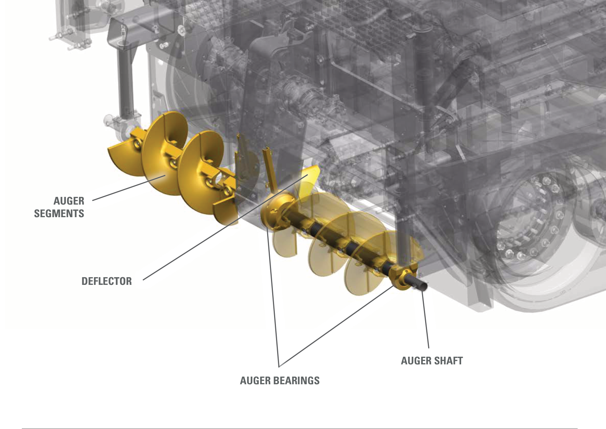
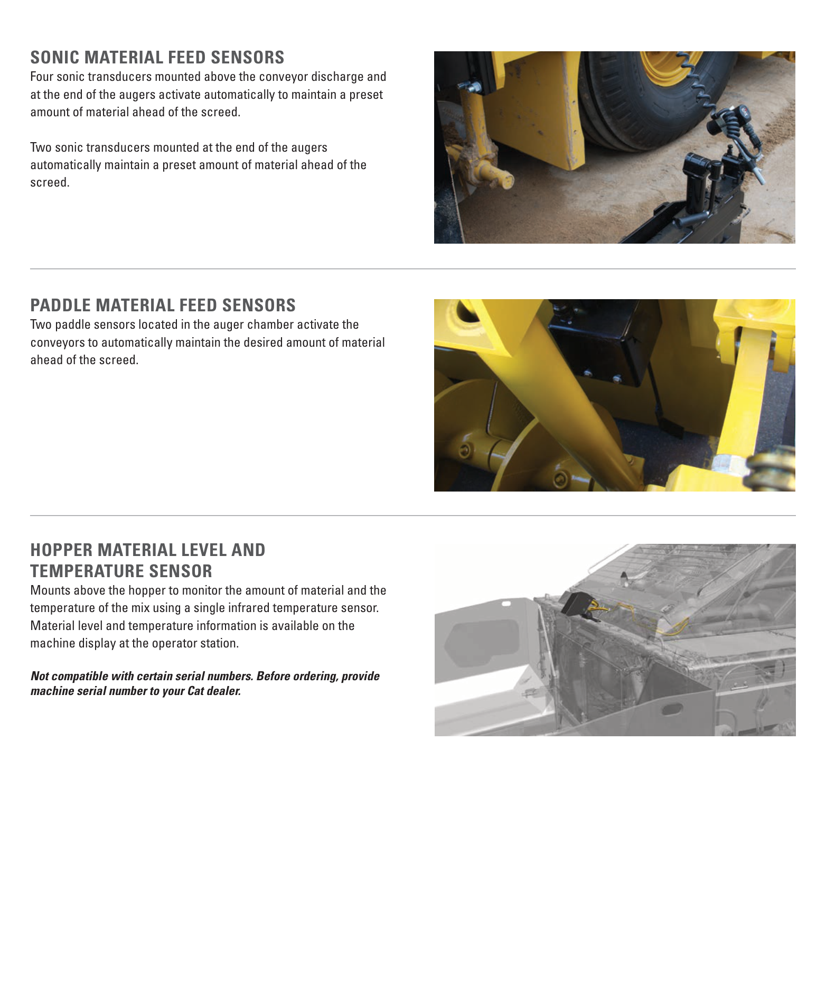

Study chapter · Outline I2
Paving machine equipment and attachments
A paver consists of a tractor that receives and moves material and a screed that forms the mat. Equipment choice depends on the work, access, production and required result—not only the nominal paving width.
Learning step 1
Types of paving machines
Pavers range from compact pathway or shoulder machines to highway-class equipment. Common nominal categories include 8 ft and 10 ft machines, but actual minimum/maximum widths, extensions and transport dimensions depend on the model. Compare work width, production, turning space, support, transport and fitted options. Light, medium and highway duty describe broad applications rather than interchangeable operating limits. Match the OMM to model, serial range and configuration.
Two main sections of the paver

Learning step 2
Major components
Identify the tractor’s hopper and wings, push rollers/truck interface, slat conveyors or other fitted feed system, augers, engine, hydraulics, undercarriage, operator station and grade/slope controls. Wheeled, rubber-tracked and steel-tracked arrangements differ. Identify the screed’s tow arms/tow points, main plate, extensions, end gates, heating and vibration/tamper equipment where fitted. Conveyors move material toward the screed; augers spread it; the screed forms the layer. Do not confuse a feed sensor with a grade sensor.
Auger parts: identify the assembly

Learning step 3
Attachments
A pickup machine can collect a windrow placed by an appropriate delivery system and feed the paver. A material-transfer vehicle or hopper insert may buffer supply or remix material, depending on design. These can reduce certain handling problems but do not guarantee freedom from segregation or a universal productivity increase. Belly-dump and end-dump arrangements require different work plans. Check compatibility, added weight, clearance and operating instructions for every attachment.
Feed sensing and hopper information

Try it and explain your thinking
Label ten parts on the supplied paver figure and state each function.
Label ten parts on the supplied paver figure and state each function.
Skills you use: Reading, Communication.
Convert nominal 8 ft and 10 ft widths to metres
Convert nominal 8 ft and 10 ft widths to metres. Do these establish the actual screed settings?
Skills you use: Numeracy, Problem solving.
Ask an AI to create a component table from the supplied figure and caption
Ask an AI to create a component table from the supplied figure and caption. How will you audit it?
Skills you use: Digital, Writing, Creativity and innovation.
Show the skill in supervised practice
Machine/model/serial or classroom case: __________ · Manual/procedure and revision: __________ · Date/location: __________ · Learner/observer: __________
Record each criterion as 0—not yet demonstrated, 1—with task-solving support, or 2—independently under the stated conditions. Mark unobserved criteria separately; do not convert missing opportunity into a zero. The assessor determines the required repeat practice and applicable qualification requirements. A critical failure means hold, correction and reassessment regardless of the numerical result. Use safe simulations for classroom reasoning; actual operation requires the selected equipment, approved conditions and competent supervision.
| What the observer checks | Result | Evidence |
|---|---|---|
| Critical: Safe access, surroundings and communication maintained. | Pass / hold | Observation: __________________ |
| Critical: Required energy, heat, movement and public-access controls maintained for the actual task. | Pass / hold | Observation: __________________ |
| Identify tractor and screed assemblies accurately. | 0 / 1 / 2 | Evidence/help: ________________ |
| Distinguish feed, grade and slope-control functions. | 0 / 1 / 2 | Evidence/help: ________________ |
| Check attachment compatibility and document scope. | 0 / 1 / 2 | Evidence/help: ________________ |
Actual conditions and support: __________________________
Feedback, next practice and authorized release/status: __________________________
Sources and further reading
- SkilledTradesBC. (2016). Asphalt Paving/Laydown Technician program outline, I2, printed p. 70; source PDF pp. 72–72.
- Caterpillar. (Various editions). Original machine component figures, with publication/page/model records. Open publication.
- Caterpillar. (2016). Guide to Asphalt Paving (QEBQ1888). Asphalt paving process, tractor, screed, material delivery and handwork; model examples vary. Open publication.
- Asphalt Institute. (2007). The asphalt handbook (7th ed., MS-4), Chapter 8: Hot Mix Asphalt Paving; source PDF pp. 391–446. Open publication.
- LeeBoy. (2026). 8680 Commercial Paver: Safety and operations manual (1033428-SOP). Serial 365152 and above. Components pp. 3-1–3-32; operation pp. 4-1–4-68; maintenance section 5. Open publication.
Figure-specific pages, editions and original contributors are credited beside each image. Current project requirements and the matching machine instructions determine practical use.